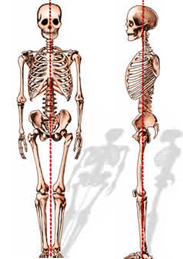
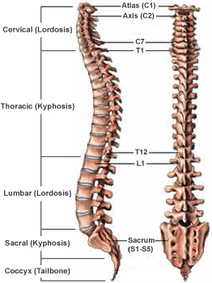
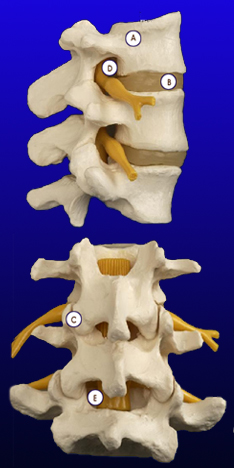

Coloana vertebrală
– Mișcarea
– Balanța
– Ținuta verticala
– Protecția măduvei spinării
– Absorbirea șocurilor

Toate elementele coloanei vertebrale împreuna cu vertebrele au scopul protejării măduvei spinării, care asigură comunicarea către creier, mobilitatea și senzațiile din organism prin interacțiunea complexă a oaselor, ligamentelor și structurilor musculare ale spatelui împreună cu nervii care o înconjoară.
Coloanei vertebrale normală a unui adult este echilibrată peste pelvis, necesitând astfel un minim volum de forțare a muschilor pentru a menține o poziție verticală.
Pierderea echilibrului coloanei poate duce la o forțare a muschilor acesteia și chiar a deformării. Când coloana vertebrală suferă o accidentare și funcția sa este depreciată, consecințele pot fi dureroase si pot duce chiar la handicap motor.
Împărțirea coloanei vertebrale
La naștere oamenii au 33 de vertebre. Pana la vârsta adultă însă, raman 24 din cauza fuziunii vertebrelor din zona sacrată.
spinal_curves_regionsCele 7 vertebre care formează gâtul constituie coloana cervicală și sunt etichetate cu C1 – C7. Cele șapte vertebre ale coloanei cervicale sunt responsabile pentru funcționarea normală și mobilitatea gâtului. Ele protejează de asemenea măduva spinării, nervii și arterele care se extind de la creier la restul corpului.
Partea superioară a spatelui, sau coloanei vertebrale toracice, are 12 vertebre, etichetate cu T1 – T12.
Mijlocul, sau coloana lombară, are 5 vertebre, etichetate cu L1 – L5. Coloana lombară suportă cea mai mare greutate în raport cu celelalte zone constituind astfel o sursă comună de dureri.
Osul sacru (S1) și coccisul sunt formate din 9 vertebre care sunt condensate împreună pentru a forma o unitate solidă, osoasă.

Curbura coloanei vertebrale
Văzută din față sau din spate, coloana vertebrale normală este o linie dreaptă, cu fiecare vertebra stând direct pe partea de sus a celeilalte. Curbura coloanei vertebrale privită în acelați mod indică o afecțiune numită scolioză.
Când este privită din lateral, coloana vertebrală normală are trei curbe graduale:
– Gâtul are o curbă lordotică, ceea ce înseamnă că se curbează spre interior.
– Coloana vertebrală toracică are o curbă tip kyphotic, ceea ce înseamnă că se curbează spre exterior.
– Coloana vertebrală lombară are ca și în cazul celei cervicale, o curbă lordotică.
Aceste curbe ajută coloana vertebrală să suporte sarcina capului și a părții superioare a corpului, și să mențină echilibrul în poziția verticală. Totuși, curbură excesivă poate duce la dezechilibru.
Elementele coloanei vertebrale
Elementele coloanei vertebrale sunt concepute pentru a proteja maduva spinarii, pentru a susține corpul și a facilita mișcarea.
A. Vertebrele
Vertebrele sprijină majoritatea greutății ce apasă asupra coloanei vertebrale. Corpul fiecărei vertebre este atașat la un inel osos format din mai multe părți. O proiecție osoasă pe fiecare parte a corpului vertebral numită pedicul susține bolta care protejează canalul spinal. Laminele sunt părți ale vertebrelor care formează partea din spate a arcului osos care înconjoară și acoperă canalul spinal. Există un proces transversal pe fiecare parte a arcului în care unii dintre mușchii coloanei vertebrale sunt atașați la vertebre. Procesul spinal este partea osoasă a corpului vertebral, care poate fi simțit ca o serie de monturi ce încep de la mijlocul gâtului unei persoane și care coboara până în zona lombară.
B. Discurile intervertebrale
Între vertebrele coloanei sunt discuri, care funcționează ca amortizoare ale articulațiilor. Acestea sunt concepute pentru a prelua șocurile suportate de coloana vertebrală în timp ce permite corpurilor vertebrale să se miște în siguranță. Fiecare disc este format dintr-un inel puternic la exterior, numit annulus fibrosis și un centru moale numit nucleus pulposus. Stratul exterior (annulus) ajuta la mentinerea miezului interior al discului (nucleus) intact. Inelul este format din fibre foarte puternice care conectează fiecare vertebră împreună. Nucleul discului are un conținut foarte ridicat de apă care ajuta la menținerea flexibilității și are proprietăți de absorbire a șocurilor.
C. Legaturile Facet
Legăturile Facet conectează arcadele osoase ale fiecăruia dintre corpurile vertebrale. Există două fețe articulare între fiecare pereche de vertebre, unul pe fiecare parte. Legăturile Facet conectează fiecare vertebră direct deasupra și dedesubtul acestora, și sunt destinate să permită corpurilor vertebrale să se rotească fiecare în raport cu celălalt.
D. Foramenul Neural
Foramenul neural este deschiderea prin care rădăcinile nervoase ies din coloana vertebrală si se deplasează spre restul corpului. Există două foramene neurale localizate între fiecare pereche de vertebre, câte una pe fiecare parte. Foramenul creează un pasaj de protecție pentru nervii care transportă semnale între măduva spinării și restul corpului.

E. Măduva spinării și nervii
Măduva spinării se intinde de la baza creierului până la zona dintre partea de jos a primei vertebre lombare și partea de sus a celei de-a doua vertebre lombare. Măduva spinării se termină printr-o divergență în nervi individuali ce coboară către partea de jos a corpului si către picioare. Datorită aspectului său, acest grup de nervi se numește cauda equina, numele latin pentru “Coada calului”. Acest grup de nervi trece prin canalul spinal pe o distanță scurtă și apoi ies în foramenul neural.
Măduva spinării este acoperită de o membrană protectoare, denumită dura mater, care formează un sac etanș în jurul măduvei și a nervilor. În acest sac circulă lichidul cerebro-rahidian care înconjoară măduva spinării.
Nervii situați în fiecare parte a canalului spinal au corespondență cu parți specifice ale corpului. Cei din zona cervicală spre exemplu, controlează partea de sus a pieptului și brațele, iar cei situați în zona lombară către șolduri, zona fesieră și picioare. De asemenea, nervii conduc semnalele electrice înapoi către creier, creând senzațiile. O traumă, afectare, a nervilor, rădăcinilor nervoase sau a măduvei spinării pot duce la simptome cum ar fi durere, furnicături, amorțeală și scădere de forță musculară, atât în zona afectată cât și în extremitățile acesteia.